<!DOCTYPE html>
<html lang="en">
  <head>
    <meta charset="UTF-8" />
    <meta http-equiv="X-UA-Compatible" content="IE=edge" />
    <meta name="viewport" content="width=device-width, initial-scale=1.0" />
    <link
      href="https://cdn.jsdelivr.net/npm/bootstrap@5.1.3/dist/css/bootstrap.min.css"
      rel="stylesheet"
    />
    <link rel="stylesheet" href="style.css" />
    <title>Document</title>
  </head>
  <body>
    <footer>
      <div class="end">
        <div class="top-line">
          <p>
            Vasamuseet, Stockholm - En del av
            <a class="partners-link" href="https://www.smtm.se/"
              >Statens maritima och transporthistoriska museer
            </a>
          </p>
        </div>
        <div class="partners">
          <div class="row">
            <div class="partners-block col-md-12 col-xl-2">
              <a href="https://www.marinmuseum.se/">
                
              </a>
            </div>
            <div class="partners-block col-md-12 col-xl-2">
              <a href="https://www.sjohistoriska.se/">
                
              </a>
            </div>
            <div class="partners-block col-md-12 col-xl-2">
              <a href="https://www.vasamuseet.se/">
                
              </a>
            </div>

            <div class="partners-block col-md-12 col-xl-2">
              <a href="https://www.vrak.se/">
                
              </a>
            </div>
            <div class="partners-block col-md-12 col-xl-2">
              <a href="https://www.jarnvagsmuseet.se/">
                
              </a>
            </div>
          </div>
        </div>
      </div>
    </footer>

    <script
      src="https://kit.fontawesome.com/accd96e367.js"
      crossorigin="anonymous"
    ></script>
    <script src="https://cdn.jsdelivr.net/npm/bootstrap@5.1.3/dist/js/bootstrap.bundle.min.js"></script>
  </body>
</html>
